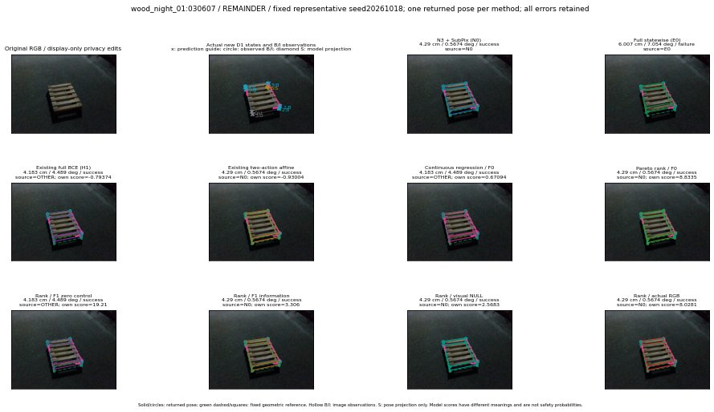

실선은 반환 자세, 초록 점선은 고정 기하 참조입니다. S는 영상 관측이 아닙니다. 점수는 모델별 의미가 다르며 보정된 안전 확률이 아닙니다. 개인정보 처리는 표시 사본에만 적용했습니다.
| 방법·seed | 위치 / 회전 / 공동성공 | 실제 출처 | 선택 후보 | 각 모델 자체 점수 |
|---|---|---|---|---|
| N0 | 4.29 cm / 0.5674 deg / success | N0 | N/A | N/A |
| E0 | 6.007 cm / 7.054 deg / failure | E0 | N/A | N/A |
| E0_REGENERATED | 6.007 cm / 7.054 deg / failure | E0 | E0_REGENERATED | N/A |
| POSEFIX_SUBPIX_PF_ANCHOR | 4.386 cm / 0.7269 deg / success | OTHER | N/A | N/A |
| POSEFIX_SUBPIX_YOLO_ANCHOR | 4.386 cm / 0.7269 deg / success | OTHER | N/A | N/A |
| D1_H1_MLP_s20261018 | 4.183 cm / 4.489 deg / success | OTHER | G10/ORIGINAL_WD/selected | -0.7937359809875488 |
| D1_H1_MLP_s20261019 | 6.007 cm / 7.054 deg / failure | E0 | E0_REGENERATED | -0.9222135543823242 |
| D1_H1_MLP_s20261020 | 4.183 cm / 4.489 deg / success | OTHER | G10/ORIGINAL_WD/selected | -1.4302006959915161 |
| D1_H1_PAIR_MLP_s20261018 | 6.007 cm / 7.054 deg / failure | E0 | E0_REGENERATED | -1.7540171146392822 |
| D1_H1_PAIR_MLP_s20261019 | 4.29 cm / 0.5674 deg / success | N0 | N0 | -1.596511960029602 |
| D1_H1_PAIR_MLP_s20261020 | 4.29 cm / 0.5674 deg / success | N0 | N0 | -1.7151516675949097 |
| D1_H1_PAIR_ROLE_AFFINE_s20261018 | 4.29 cm / 0.5674 deg / success | N0 | N0 | -0.9300375580787659 |
| D1_H1_PAIR_ROLE_AFFINE_s20261019 | 4.29 cm / 0.5674 deg / success | N0 | N0 | -1.087465524673462 |
| D1_H1_PAIR_ROLE_AFFINE_s20261020 | 4.29 cm / 0.5674 deg / success | N0 | N0 | -0.9270663261413574 |
| R_CONT_F0_s20261018 | 4.183 cm / 4.489 deg / success | OTHER | G10/ORIGINAL_WD/selected | 0.6709384322166443 |
| R_CONT_F0_s20261019 | 4.183 cm / 4.489 deg / success | OTHER | G10/ORIGINAL_WD/selected | 0.7266656160354614 |
| R_CONT_F0_s20261020 | 4.183 cm / 4.489 deg / success | OTHER | G10/ORIGINAL_WD/selected | 0.67790687084198 |
| R_ORDER_F0_s20261018 | 4.29 cm / 0.5674 deg / success | N0 | N0 | 8.833526611328125 |
| R_ORDER_F0_s20261019 | 4.183 cm / 4.489 deg / success | OTHER | G10/ORIGINAL_WD/endpoint/13 | 1.4071779251098633 |
| R_ORDER_F0_s20261020 | 4.183 cm / 4.489 deg / success | OTHER | G10/ORIGINAL_WD/selected | -0.565539538860321 |
| R_ORDER_F1_ZERO_s20261018 | 4.183 cm / 4.489 deg / success | OTHER | G10/ORIGINAL_WD/endpoint/13 | 19.21004295349121 |
| R_ORDER_F1_ZERO_s20261019 | 4.183 cm / 4.489 deg / success | OTHER | G10/ORIGINAL_WD/selected | 13.195296287536621 |
| R_ORDER_F1_ZERO_s20261020 | 4.183 cm / 4.489 deg / success | OTHER | G10/ORIGINAL_WD/selected | 7.927912712097168 |
| R_ORDER_F1_s20261018 | 4.29 cm / 0.5674 deg / success | N0 | N0 | 3.306020736694336 |
| R_ORDER_F1_s20261019 | 4.183 cm / 4.489 deg / success | OTHER | G10/ORIGINAL_WD/endpoint/13 | 6.252737522125244 |
| R_ORDER_F1_s20261020 | 4.183 cm / 4.489 deg / success | OTHER | G10/ORIGINAL_WD/selected | -0.9282149076461792 |
| V_ORDER_NULL_s20261018 | 4.29 cm / 0.5674 deg / success | N0 | N0 | 2.56829833984375 |
| V_ORDER_NULL_s20261019 | 4.29 cm / 0.5674 deg / success | N0 | N0 | 1.5737087726593018 |
| V_ORDER_NULL_s20261020 | 4.183 cm / 4.489 deg / success | OTHER | G10/ORIGINAL_WD/selected | 2.013481378555298 |
| V_ORDER_RGB_s20261018 | 4.29 cm / 0.5674 deg / success | N0 | N0 | 8.028081893920898 |
| V_ORDER_RGB_s20261019 | 4.183 cm / 4.489 deg / success | OTHER | G10/ORIGINAL_WD/endpoint/13 | 0.8631846904754639 |
| V_ORDER_RGB_s20261020 | 4.29 cm / 0.5674 deg / success | N0 | N0 | -10.724892616271973 |